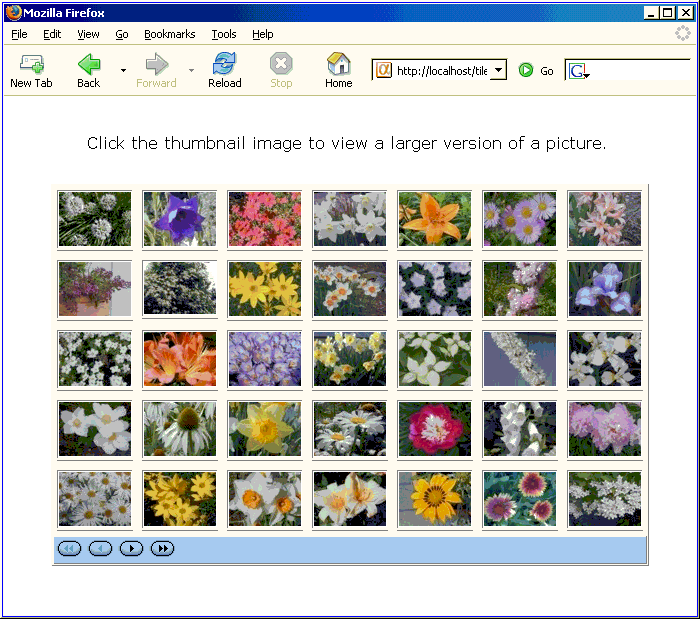
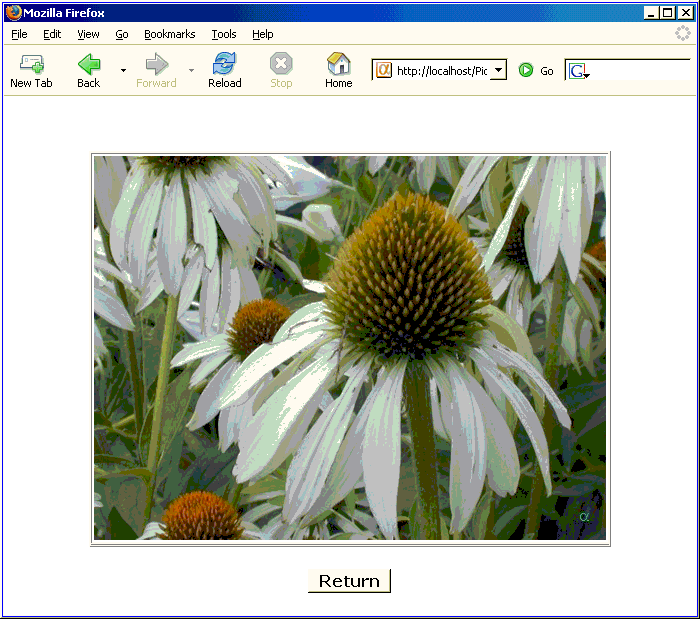

Displaying Tiled Images
Many developers want to create display multiple thumbnail images on a page, then allow the user to select one image to see it in a larger format on a second page. This tutorial describes the process of creating these pages.
Thumbnail Display
Select New > Alpha Five Web Component > Grid > OK to display the Grid Builder.
On the Component Type menu select "Columnar" in the Grid layout list.
Display the Grid > Data Source menu.
Select Alpha Five .dbf Tables.
Display the Grid > Query (DBF) menu.
Select "flowers" in the Table name list.
Display the Grid > Fields menu.
Place the "Thumbnail" and "Id" fields on the grid.
Select the "Thumbnail" field in the Selected list.
Set the Display Settings > Control type value to "Image".
Set the Image Properties > In-line style value to "border-width:0;".
Set the Row Properties > Hide row value to "True".
Select the "Id" field in the Selected list.
Set the Display Settings > Control type value to "Link".
Set the Link Properties > Display what in link value to "Image in another control".
Set the Link Properties > Dynamic image control value to "{Thumbnail}".
Set the Link Properties > Link address type value to "Computer from fields in the Grid".
Set the Link Properties > Link address value to Picture.a5w?picture_filter=ID="{Id}". This opens the picture.a5w page with a filter expression that uses the value of the ID field.
Display the Grid > Properties menu.
Set the Layout Options > Style name value to "BlueMoon".
Set the Layout Options > Repeating columns value to 7.
Set the Layout Options > Rows of data value to 35.
Set the Layout Options > Show title value to "False".
Set the Column Titles and Sorting Options > Column titles position value to "No Titles".
Click
 in Record Navigator > Record navigator layout, select
in Record Navigator > Record navigator layout, select  , and click OK.
, and click OK.Set the Customization > 'Total records' message position to "No Message".
Save the component as "Tiled_Images".
Create a page named "Tiled_Images".
Place the "Tiled_Images" component on the page.
Place the following text above the component: "Click the thumbnail image to view a larger version of a picture.".
Select the text, set the font to "Verdana", and the point size to "3 (12pt)".
Select both the text and grid component and center them on the page.
Save the page.

Picture Display
Select New > Alpha Five Web Component > Grid > OK to display the Grid Builder.
Display the Grid > Data Source menu.
Select Alpha Five .dbf Tables.
Display the Grid > Query (DBF) menu.
Select "flowers" in the Table name list.
Display the Grid > Fields menu.
Place the "Picture" field on the grid.
Display the Grid > Properties menu.
Set the Layout Options > Style name value to "BlueMoon".
Set the Layout Options > Rows of data value to 1.
Set the Layout Options > Show title value to "False".
Set the Column Titles and Sorting Options > Column titles position value to "No Titles".
Set the Record Navigator > Record navigator position to "No Navigation Bar".
Set the Customization > 'Total records' message position to "No Message".
Save the component as "Picture".
Create a page named "Picture".
Place the "Picture" component on the page.
Select the grid component and center it.
Switch to the Source tab. Place the following code just before the </body></html>.
<div align=center> <form method="post" action="tiled_images.a5w" name="foo"> <button id=button_adv1 name=button_adv1><strong><font face=Verdana size=3>Return</font></strong></button> </form> </div> |
Save the page.

Running the Demo
Display A5W Pages tab of the Web Projects Control Panel.
Right click "Picture" and select Publish (Local Webroot).
Right click "Tiled_Images" and select Publish (Local Webroot) and open.
Click on any of the thumbnail images.
See Also
Contents, A5W Page Filter and Order Syntax, Demonstration
Supported By
Alpha Five Version 6 and Above